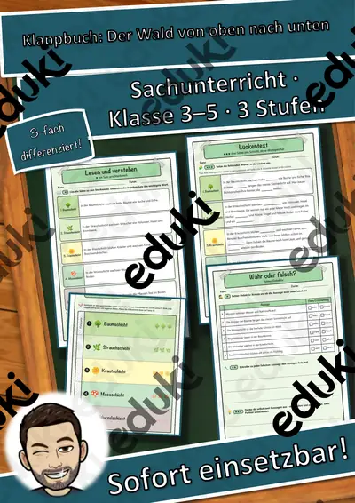
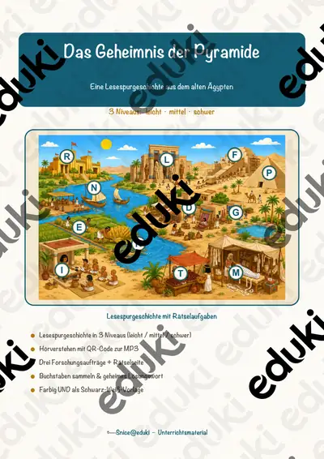

Akrobatik – Partnerfiguren und Menschenpyramiden – Lesespurgeschichte mit Rätselaufgaben (Klasse 6)
Akrobatik – Partnerfiguren und Menschenpyramiden – Lesespurgeschichte Sport (Klasse 6)Schick deine Klasse auf eine Lesespur durch einen Akrobatik-Projekttag in der Sporthalle! Nele will ganz oben auf der Pyramide stehen – und Jakob merkt schnell, dass er dafür unten ziemlich stabil sein muss. Am Hallentor kommt der Schmuck in die Kiste, am Mattenfeld wird die Turnfläche lückenlos ausgelegt, im Spannungskreis wird Körperspannung erlebbar. An der Tragepunkttafel geht es um sichere Belastungspunkte, an der Bankstation um die wichtigste Grundposition, am Partnerfeld um die erste Partnerfigur. In der Pyramidenecke wird geordnet auf- und abgebaut, am Helferposten die Hilfestellung geübt – und auf der Vorführbühne präsentiert jede Gruppe ihre Figuren. Die Gliederpuppe Gelenki ist immer dabei. Am Ende jedes Abschnitts verrät ein Hinweis den nächsten Ort auf dem Plan – nur wer genau liest, findet den Weg und sammelt alle geheimen Buchstaben zum Lösungswort.
Die passende Lesespur für den SPORTUNTERRICHT der 6. Klasse – ideal als Einstieg in eine Akrobatik-Einheit, zur Sicherheitsbelehrung vor dem ersten Pyramidenbau oder für Sporttheorie: Sie verbindet sinnentnehmendes Lesen mit Körperspannung, Sicherheitsregeln, Helfen und Sichern sowie Teamarbeit. Das Material ist SOFORT EINSETZBAR und in DREI DIFFERENZIERUNGSSTUFEN (leicht ★ / mittel ★★ / schwer ★★★) angelegt.WICHTIG: Das komplette Material ist sowohl in FARBE als auch in SCHWARZ-WEISS enthalten – ideal zum Sparen von Druckkosten.DAS IST ENTHALTEN
- Lesespurgeschichte in 3 Niveaus (leicht, mittel, schwer)
- farbiger Hallenplan als Suchkarte
- Hörverstehen mit QR-Code zur MP3 (selbstständiges Hören mit Kopfhörern)
- vier Aufträge auf dem Weg: ein Quiz, eine Rechenaufgabe, eine Zuordnung und ein Steckbrief
- Rätselseite (Wörter-Suchsel + Fragen)
- Ausmalbild zum Thema (Menschenpyramide)
- ausführliches Lösungsblatt für die Lehrkraft
- alles zusätzlich als komplette Schwarz-Weiß-VarianteSO GEHT DIE LESESPURDie Jugendlichen lesen ab START, finden im Text den nächsten Ort, suchen ihn auf dem Plan und lesen bei dieser Station weiter. An jeder richtigen Station gibt es einen Buchstaben. Eingebaute Sackgassen (Kletterwand, Sprossenwand, Basketballkorb, Trinkecke) sind keine Stationen und dienen der Selbstkontrolle. Am Ende werden die gesammelten Buchstaben umgestellt und ergeben ein geheimes Lösungswort. (Die Lösungen sind selbstverständlich nur im Lösungsblatt für die Lehrkraft enthalten.)INHALTLICHER SCHWERPUNKTSicherheitsregeln (Schmuck ablegen, Mattenlage), Körperspannung, sichere Belastungspunkte (Becken und Schultern), die Bank als Grundposition, Partnerfiguren, Rollen in der Pyramide, geordneter Auf- und Abbau, Helfen und Sichern im Klammergriff, Präsentation mit Anfangs- und Schlusspose.ABGEDECKTER LEHRPLAN (Klasse 6, Sport)
- Sport (LehrplanPLUS Bayern) – Jahrgangsstufe 6 „Bewegen an und mit Geräten“ / „Gestalten, Tanzen, Darstellen“: akrobatische Partner- und Gruppenfiguren sicher turnen, helfen und sichern, Figuren gestalten und präsentieren.
- Deutsch – Lesen: Sachtexten gezielt Informationen entnehmen; Zuhören: einem Sachhörtext folgen (Hörverstehen mit MP3).
- Mathematik – Multiplikation, Division, Summen von Zahlenfolgen.
- Fächerübergreifend / Kompetenzen: soziales Lernen (Verantwortung, Absprache, Rücksicht), genaues Lesen und Prüfen, kreatives Gestalten (Ausmalbild).
Geeignet für Freiarbeit, Stationenlernen, Vertretungsstunden, Wochenplan, Projekttage, Sporttheorie und Distanzunterricht. Klassenstufe 6.
Ähnliche Materialien

Klappbuch-Werkstatt: Der Wald von oben nach unten – Sachunterricht, 3 Stufen & Kurztest (Klasse 3–5)

Schmuck Lückentext mit Wortspeicher Hörverstehen und Suchsel

Pyramide Lückentext mit Wortspeicher Hörverstehen und Suchsel

Einrad Lückentext mit Wortspeicher Hörverstehen und Suchsel

Pyramiden von Gizeh Lückentext mit Wortspeicher Hörverstehen und Suchsel

Das Geheimnis der Pyramide (Ägypten) – Lesespurgeschichte mit Rätselaufgaben (Klasse 5)

Eishockey – schnell, hart und fair – Lesespurgeschichte mit Rätselaufgaben (Klasse 7)